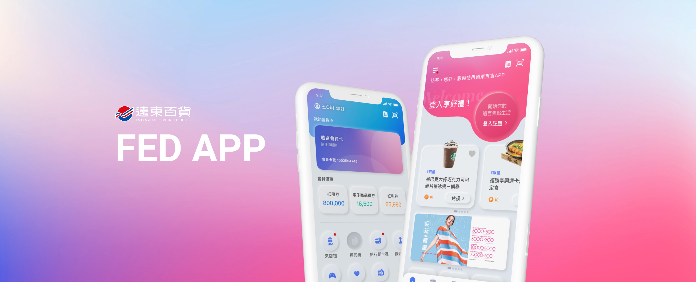
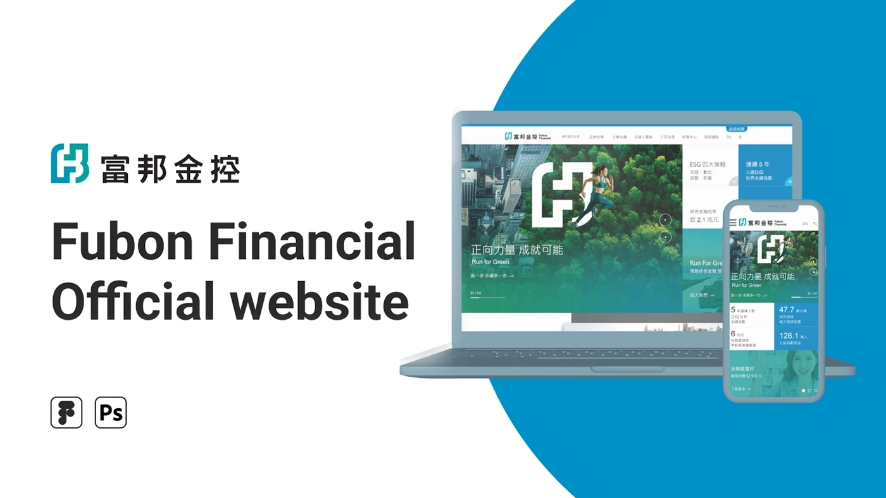

Fed APP
A redesign of Far Eastern's loyalty app — a faster redemption flow, gamified point-earning, and a more premium visual language.
View Case Study →UI/UX Product Designer
Research, design, and a bubble tea — light sugar, light ice.
The best ideas hide in everyday things.
Data isn't just validation — it's direction.
The devil's in the details. Designer, aka eagle-eye specialist.
View My WorkAbout Me
I'm Sharon Chen, six years into building digital products — from AI SaaS and e-commerce to brand websites. Lately I've been focused on how to work well with AI.
Research before design, always. Find the problem actually worth solving. What drives me is curiosity — and slightly too much bubble tea.
Craft
Tools
Experience
Selected Works

A redesign of Far Eastern's loyalty app — a faster redemption flow, gamified point-earning, and a more premium visual language.
View Case Study →
Homepage redesign for one of Taiwan's largest financial groups — balancing corporate credibility with engagement through clearer visual hierarchy and information architecture.
View Case Study →

A social campaign for UNIQLO Taiwan, built around a chatbot personality quiz that delivers personalized outfit recommendations.
View Case Study →
A mobile campaign for a Dior pop-up — an interactive quiz that turns the in-store experience into a shareable digital keepsake.
View Case Study →How I Work
Research, interviews, competitive audit
Insights synthesis, problem framing
Wireframes, prototypes, testing
Handoff, QA, iteration